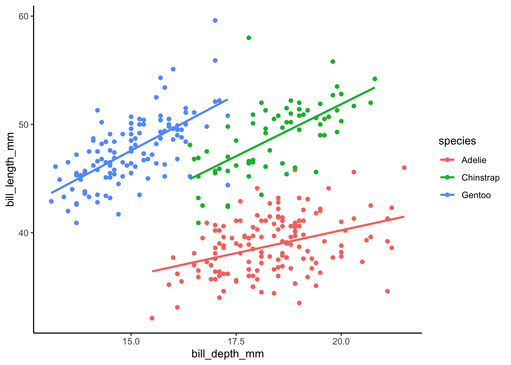

Guía 6: Modelo lineal
Laboratorio de datos 2023 (comisión: G. Solovey)
Ejercicio 1
1.1 Cargar la librería palmerpenguins. Usando el dataset penguins y borrando las observaciones que tengan algún NA responder estas preguntas.
1.2 Realizar un gráfico de dispersión que muestre la relación entre el ancho y el largo del pico de los pinguinos de la especie Adelie (columnas bill_depth_mm y bill_length_mm).
1.3 Escribir la ecuación del modelo de regresión lineal simple que tenga como variable respuesta el largo del pico y como explicativa al ancho (usar lm() para calcular los coeficientes del modelo)
\[ \hat{\text{largo}} = \text{??} + \text{??} \times \text{ancho} \]
1.4 ¿Qué unidades tienen la ordenada al origen y la pendiente? ¿Cómo se interpretan los valores estimados de la ordenada al origen y la pendiente?
1.5 ¿Cuál es el error cuadrático medio del modelo? ¿Cuál es el coeficiente de determinación (\(R^2\))? Programar una función que calcule el error cuadrático medio y \(R^2\).
1.6 Suponga que se encuentra un pinguino de la especie Adelie que tiene un pico de 2 cm de ancho. El dato del largo del pico se perdió. Usando el modelo lineal simple, ¿qué valor de largo de pico tendría ese pinguino? Si se encuentra un pinguino bebé con un pico de 5mm de ancho, ¿sería adecuado usar este modelo para conocer el largo del pico dado su ancho?
1.7 Repetir 1.3 para los pinguinos de las otras 3 especies.
1.8 Reproducir el gráfico que se muestra abajo usando geom_smooth(method="lm", se = F) y luego, “a mano”, usando los resultados de 1.7 y geom_abline().
1.9 Sólo para los pinguinos de la especie Adelie, definir una nueva variable que sea el ancho del pico centrado respecto al ancho promedio. Es decir, para cada pinguino \(i\):
\[ \text{ancho.cen}_i = \text{ancho}_i - <\text{ancho}> \]
donde \(<\text{ancho}>\) es el ancho promedio del pico.
Luego repetir 1.3 para este modelo. Es decir, reemplazar los “??” por los estimadores de mínimos cuadrados.
\[ \hat{\text{largo}} = \text{??} + \text{??} \times \text{ancho.cen} \]
1.10 ¿Qué interpretaición tienen ahora la ordenada al origen y la pendiente del modelo? Discutir las ventajas y desventajas de usar \(\text{ancho.cen}\) o \(\text{ancho}\).
1.11 Calcular el coeficiente de determinación para este nuevo modelo. ¿Es igual o diferente al calculado en 1.5? Explicar.
Ejercicio 2
2.1 Utilizando la librería mtcars incluida en R-base, que contiene datos sobre automóviles, crear un gráfico para visualizar la relación entre la potencia del motor (columna hp) y la eficiencia en millas por galón (columna mpg). ¿Qué patrón se observa?
2.2 Realiza una regresión lineal simple para predecir la eficiencia en millas por galón en función de la potencia del motor, ¿Cuál es el valor del coeficiente de determinación (\(R^2\))?
2.3 Discutir si parece adecuado un modelo lineal para describir esta relación.
Ejercicio 3
3.1 Cargar el conjunto de datos iris, incluida en R-base, que contiene información sobre especies de flores y sus características. Intenta realizar una regresión lineal simple para predecir la longitud del sépalo (columna Sepal.Length) en función del ancho del sépalo (columna Sepal.Width). ¿Cuál es el valor del coeficiente de determinación (\(R^2\))?
Ejercicio 4
4.1 Cargar la librería gapminder. Seleccionar datos de un año particular y realizar un gráfico de dispersión que muestre la relación entre el PIB per cápita (columna gdpPercap) y la esperanza de vida (columna lifeExp).
4.2 Realizar una regresión lineal simple para predecir la esperanza de vida en función del PBI per cápita para 1997 en el continente americano.
4.3 Discutir si el modelo es adecuado para describir esta relación.
4.4 Calcular el error estándar de la estimación (SEE) para evaluar la precisión del modelo de regresión.
4.5 Repetir 4.2 para un modelo pero utilizando como variable respuesta el logaritmo de la esperanza de vida y como variable explicativa el logaritmo del PBI per capita. Discutir la conveniencia de usar el logaritmo de las variables.